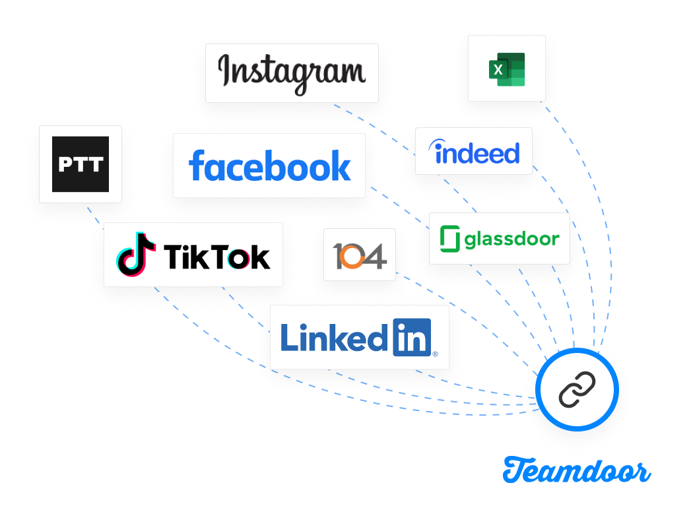
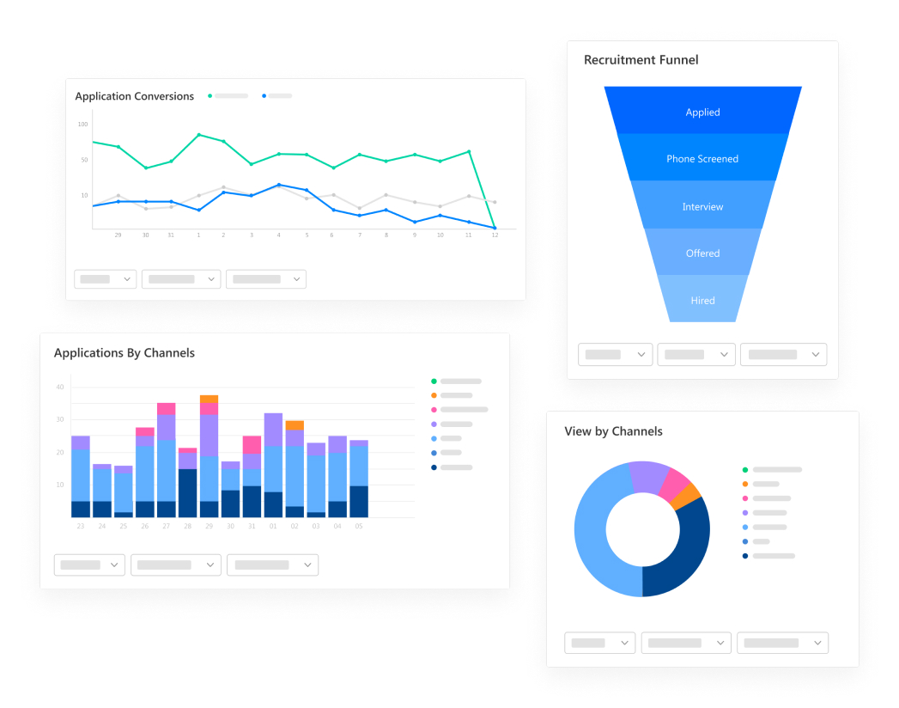
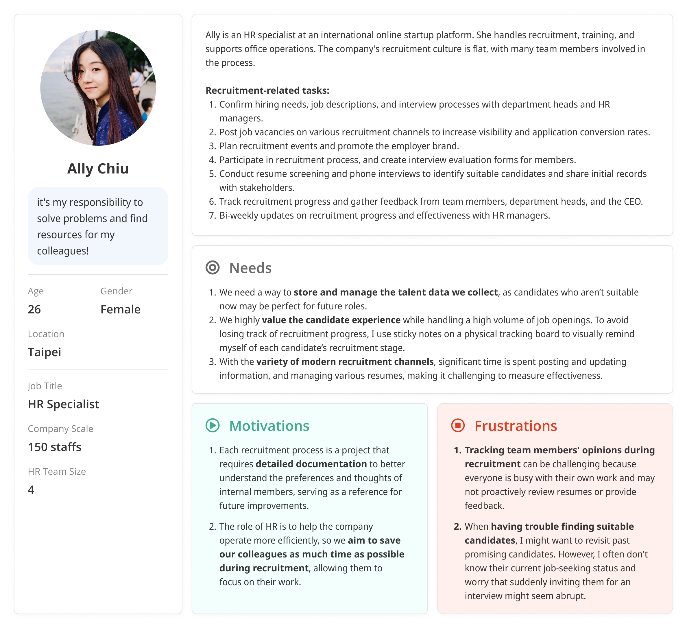
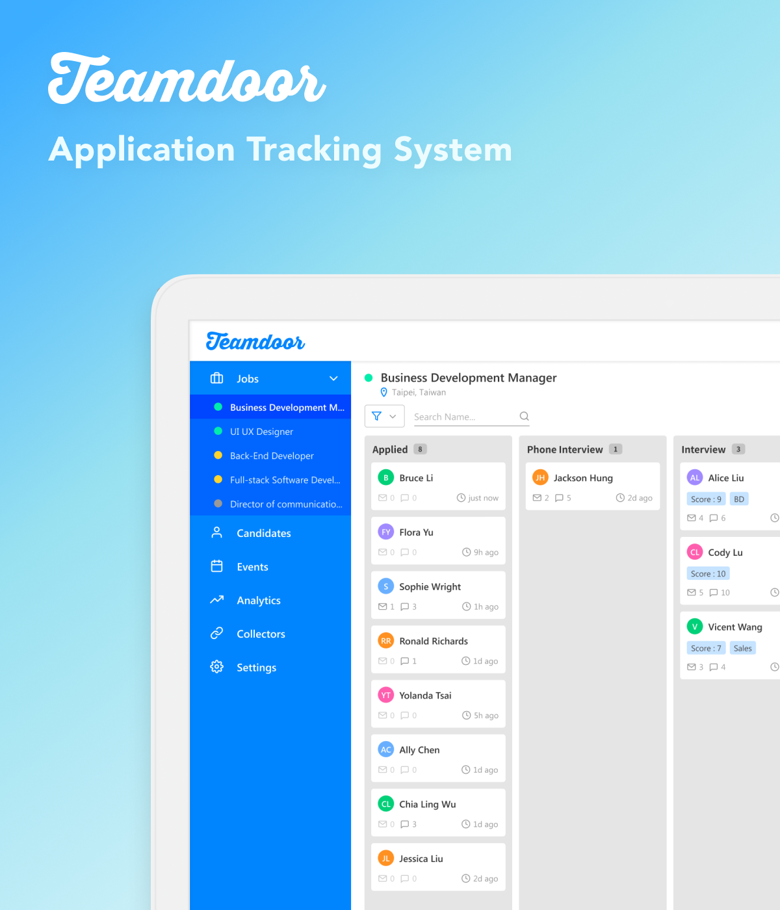

<!DOCTYPE html>
<html lang="en">
<head>
  <meta charset="UTF-8">
  <meta http-equiv="X-UA-Compatible" content="IE=edge">
  <meta name="viewport" content="width=device-width, initial-scale=1.0">
  <title>Discovery Research</title>

  <script src="https://www.w3schools.com/lib/w3.js"></script>


  <!--
    Favicon
  -->
  <link rel="shortcut icon" href="../assets/images/logo.ico" type="image/x-icon">

  <!--
    Custom CSS link
  -->
  <link rel="stylesheet" href="../assets/css/style.css">

  <!--
    Google font link
  -->
  <link rel="preconnect" href="https://fonts.googleapis.com">
  <link rel="preconnect" href="https://fonts.gstatic.com" crossorigin>
  <link href="https://fonts.googleapis.com/css2?family=Poppins:wght@300;400;500;600&display=swap" rel="stylesheet">

</head>

<body>
  <!--
    Include Progress bar
  -->
  <div w3-include-html="../progress.html"></div>

  
  <!--
    Include Navbar
  -->
  <div w3-include-html="../navbar.html"></div>

  <div> 
    <figure class="project-banner">
      
      
    </figure>
    
    <div class="active project-parent" > 
      <div class="sidebar bg-normal">
        <ul class="sidebar-list">
          <li> 
            <a href="#overview" class="sidebar-item">Overview</a>
          </li>
          <li > 
            <a href="#background" class="sidebar-item">Background</a>
          </li>
          <li > 
            <a href="#research" class="sidebar-item">Research</a>
          </li>
          <li > 
            <a href="#design" class="sidebar-item">Design Strategies</a>
          </li>
          <li > 
            <a href="#outcome" class="sidebar-item">Outcome</a>
          </li>
          <li > 
            <a href="#reflection" class="sidebar-item">Learning & Next Step</a>
          </li>
        </ul>
      </div>

      <div class="project-page">
        <section class="bg-normal" id="overview">
          <h2 class="h2">Content Discovery on Bigscreen</h2>
          <div>
            <h3 class="h3 project-detail-subtitle"> Overview </h3>
            <p class="project-detail-text">
              HR 們常常會在「協作溝通」以及「投遞管理」上花費大量的時間，而無法有完整的時間處理策略面的工作，如：進行招募決策、優化僱主品牌等。
              <br>
              <br>
              <a class="link-inline" href="https://www.teamdoor.io/" target="_blank">Teamdoor</a> 透過整合各種來源的履歷表、自動產出數據報表，增加招募管理的效率。同時具備許多協作功能，讓繁雜的跨團隊溝通變得順暢！
            </p>
          </div>
          <div>
            <h3 class="h3 project-detail-subtitle"> Goal </h3>
            <p class="project-detail-text">
              在完成最小可行性產品（MVP）後，需要<b>確認是否符合市場需求</b>－確認使用者對新產品的認知、採用考量，並挖掘產品的下一步該怎麼走，進而打造出大家願意買單的 SaaS 產品。
            </p>
          </div>
          <div class="prject-detail-stats">
            <div class="stats-item">
              <h5 class="h5 stats-title">Role</h5>
              <h5 class="h5 stats-text">
                    UI/UX Design
                    <br>
                    User Research
              </h4>
            </div>
            <div class="stats-item">
              <h5 class="h5 stats-title">Timeline</h5>
              <h5 class="h5 stats-text">2019 - 2020</h5>
            </div>
            <div class="stats-item">
              <h5 class="h5 stats-title">Team Size</h5>
              <h5 class="h5 stats-text">Solo Design</h5>
            </div>
          </div>
        </section>
        <section class="bg-normal" id="background">
          <h3 class="h3 project-detail-title"> Background </h3>
          <p class="project-detail-text">
            Teamdoor 結合「專案管理」以及「短網址追蹤」工具的概念，將每一筆投遞都變成一張卡片， 讓 HR 可以視覺化的看板管理 (Kanban) 方式，將求職者拖曳到相對應的階段內。
            <br><br>
            第一階段 MVP 的功能包含：建立職缺、投遞履歷、求職者卡片管理 等，以及「短網址蒐集器」，讓各種管道進來的履歷都可以整合在 Teamdoor 一站式管理，並自動產生「招募成效分析報表」。
          </p>
          <div class="project-img-2-column">
            <figure class="project-detail-img">
              
              <h5 class="img-title">短網址蒐集 概念圖</h5>
            </figure>
            <figure class="project-detail-img">
              
              <h5 class="img-title">招募成效分析報表</h5>
            </figure>
          </div>
          
        </section>
        <section class="bg-normal" id="research">
          <h3 class="h3 project-detail-title"> Research </h3>
          <p class="project-detail-text">
            為實際了解 HR 招募工作內容、企業招募文化、跨部門協作過程、利害關係人之間的互動關係，以及此產品實際應用的場景。我們選擇進行 1 對 1 使用者訪談，了解不同企業內部的招募流程、在意的重點以及遇到的困難。同時搭配易用性測試，觀察使用者是否能順暢完成任務，以及對產品的理解程度。
          </p>
            <div>
              <h3 class="h3 project-detail-subtitle"> User Interview </h3>
              <p class="project-detail-text">
                共訪談 10 位以上的招募決策者和參與者，除了 HR 及部門主管，也包含 COO 以及創辦人。企業類型則包含不同規模、從未或正在使用 ATS 的企業。
              </p>
            </div>
            <div>
              <h3 class="h3 project-detail-subtitle"> Usability Test</h3>
              <p class="project-detail-text">
                請使用者嘗試探索操作介面並完成指定任務。操作期間以放聲思考法表達體驗中的認知以及遇到的問題。在完成任務後，與我們分享他所認知的 Teamdoor 擁有什麼樣的功能。
              </p>
            </div>
         
          <div class="detail-highlight">
            <h3 class="highlight-title"> Insights </h3>
            <div class="highlight-subtitle"> 1. 人才庫管理是共同痛點</div>
            <h5 class="highlight-text"> 
              同時使用多種工具如：電子信箱、職缺平台或問卷系統收履歷，造成資訊散落各地。在尋找印象中覺得不錯的履歷時，好似大海撈針，整個過程變得相當困難，最後甚至可能放棄。
            </h5>
            <div class="highlight-subtitle"> 2. 設計上應多考慮權限分級</div>
            <h5 class="highlight-text"> 
              許多招募流程中，除了用人單位主管，也會讓許多團隊成員共同參與面試、給予意見或進行招募決策。但在招募前後期，有許多較私密的資訊並不適合公開給所有招募參與者，如：關於 薪資和 Package 的討論等。因此，「適時適量」地讓成員參與招募對 HR 來說是相當重要的。
            </h5>
            <div class="highlight-subtitle"> 3. 需先滿足現有流程，以減少導入的阻礙</div>
            <h5 class="highlight-text"> 
              實際訪談後發現，有許多招募流程中的細節，Teamdoor 還無法滿足。然而，對使用者來說最重要的是能順利使用這個工具順暢地完成現有的招募工作，若會造成過多操作成本或轉移負擔則不會考慮使用。
            </h5>
            <figure class="project-detail-img">
              
            </figure>
          </div>
          
          

        </section>
        <section class="bg-normal" id="design">
          <h3 class="h3 project-detail-title"> Design Strategies </h3>
          <div class="project-detail-quote">" 針對日常使用者做設計 "</div>
          <p class="project-detail-text">
            真實情境中，參與招募的角色很多，包含：行政人員、HR、HR 主管、部門主管...等，我們選擇鎖定<b>「實際操作投遞管理系統」</b>的使用者，作為我們專注服務的對象。
            雖然這樣的角色在組織內不一定有選擇招募工具的決策權的，但透過免費試用，若發覺產品能真正幫助他們節省時間、增加工作效率，相信決策者採用工具的意願也會大幅提升！
          </p>
          <figure class="project-detail-img">
            
            <h5 class="img-title">Target User Persona</h5>
          </figure>
          <p class="project-detail-text">
            經過研究，我們發覺在設定、發布職缺以及管理求職者的流程中，需要增加更多彈性以適應不同團隊的需求。因此，我們將目標定調為以下三項：‍
            <!-- <br><br>
            <b> 
              1. 更彈性的職缺、人才管理相關功能<br>
              2. 內部成員協作更加順暢<br>
              3. 提升對外溝通效率‍
            </b>
            <br><br> -->
          </p>
        
            <div>
              <h3 class="h3 project-detail-subtitle"> 1. 人才管理 </h3>
              <p class="project-detail-text">
                能夠以多種維度去檢視過去所收到的所有檔案，並需要針對求職者檔案進行分類、搜尋，方便快速找到印象中的好人才。            </p>
            </div>
            <div>
              <h3 class="h3 project-detail-subtitle"> 2. 內部成員協作</h3>
              <p class="project-detail-text">
                打造「具有調整彈性」的權限功能，讓 HR 可以放心地邀請成員加入招募流程。進而真正增加招募效率，提高採用、續留意願！            </p>
            </div>
            <div>
              <h3 class="h3 project-detail-subtitle"> 3. 提升對外溝通效率</h3>
              <p class="project-detail-text">
                不論是與求職者的信件往來或徵才頁面，都是企業傳遞給外界的品牌訊息。建立好的品牌形象，可以吸引到更多優質人才加入！            </p>
            </div>
          <p class="project-detail-text">
            同時，必須維護數據分析功能，每次新增或修改功能都要確保功能改動不會造成數據紀錄的偏誤，未來才能幫助進行招募成效的追蹤與分析。
          </p>
         
        </section>
        <section class="bg-highlight" id="outcome">
          <h3 class="h3 project-detail-title"> Outcome </h3>
          <p class="project-detail-text">
            HR 們常常會在協作溝通以及投遞管理上花費大量的時間，而無法有完整的時間處理策略面的工作，例如：進行招募決策，或優化僱主品牌等。
            Teamdoor 透過整合各種來源的履歷表、自動產出數據報表，增加招募管理的效率。同時具備許多協作功能，幫助團隊在招募上溝通更加順暢！
          </p>
        </section>
        <section class="bg-normal" id="reflection">
          <h3 class="h3 project-detail-title"> Learning & Next Step </h3>
          <p class="project-detail-text">
            HR 們常常會在協作溝通以及投遞管理上花費大量的時間，而無法有完整的時間處理策略面的工作，例如：進行招募決策，或優化僱主品牌等。
            Teamdoor 透過整合各種來源的履歷表、自動產出數據報表，增加招募管理的效率。同時具備許多協作功能，幫助團隊在招募上溝通更加順暢！
          </p>
        </section>
        <section class="bg-normal">
          <div class="separator"></div>
          <h4 class="project-recommendation-title"> Next Project </h4>
          <div>
            <a href="teamdoor.html"  class="project-recommendation-card">
              <figure class="project-recommendation-img">
                
              </figure>
              <div class="project-recommendation-info">
                <h4>Teamdoor - HR SaaS</h4>
                <p>Web ∙ User Research ∙ UI UX</p>
              </div>
              <ion-icon name="arrow-forward-outline" class="nav-icon"></ion-icon>
            </a>
          </div>
        </section>
      </div>
    </div>
  </div> 
  
  <!--
  Include Footer
  -->
  <div w3-include-html="../footer.html"></div>

  <!--
    Custom JS link
  -->
  <script src="../assets/js/script.js"></script>

  <!--
    - ionicon link
  -->
  <script type="module" src="https://unpkg.com/ionicons@5.5.2/dist/ionicons/ionicons.esm.js"></script>
  <script nomodule src="https://unpkg.com/ionicons@5.5.2/dist/ionicons/ionicons.js"></script>


</body>
</html>